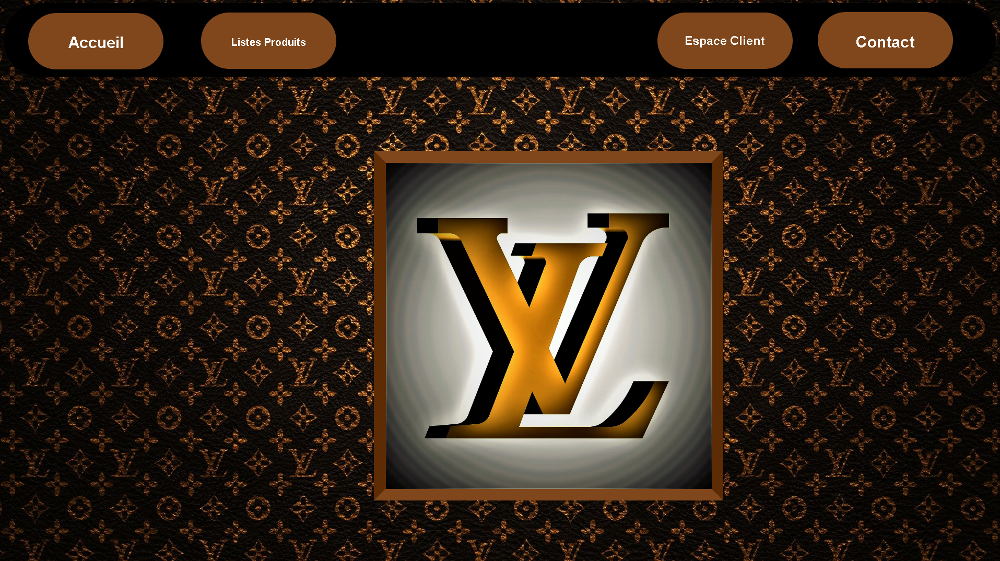
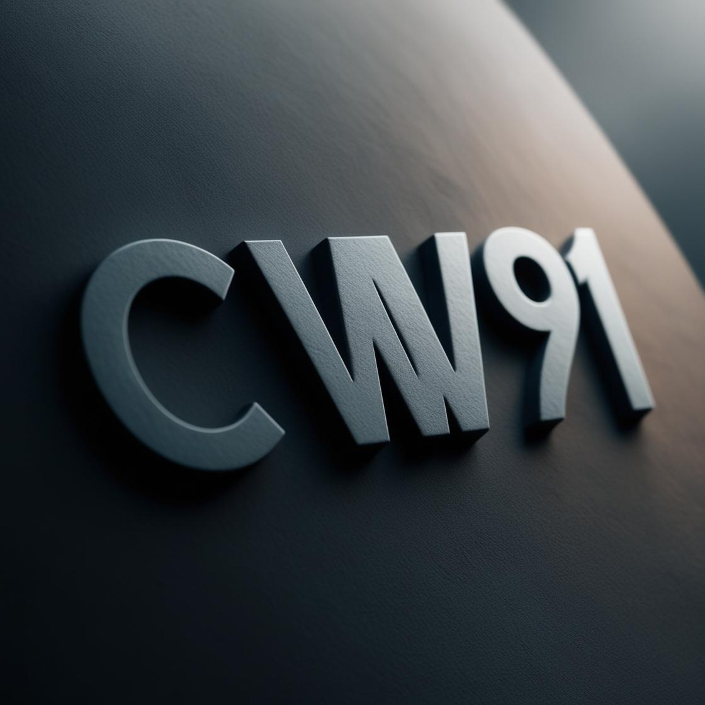
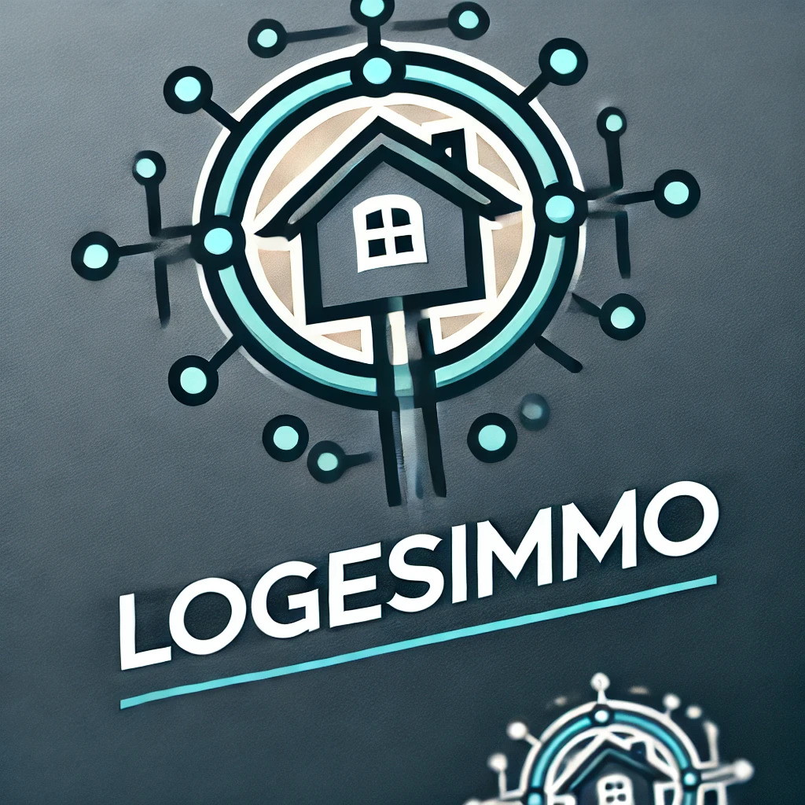
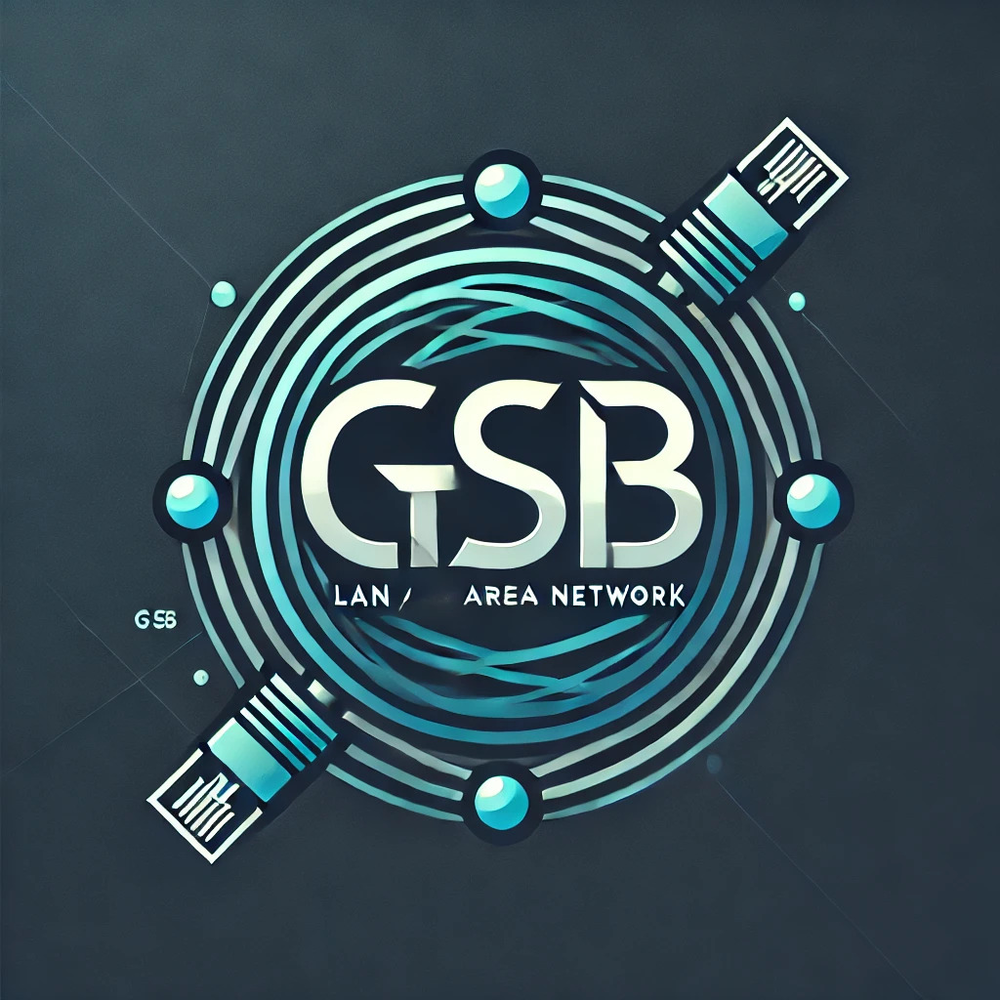
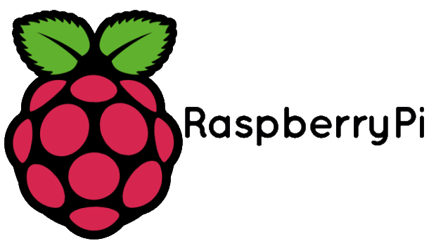

Mes Projets

Veille Technologique
Période : Septembre 2023 - Mars 2025
Description : Ce projet consistait à mettre en place une veille technologique , j'ai choisi l'ordinateur quantique pour son potentiel dans les années à venir et grâce à google alert j'ai pu obtenir des articles de différentes temporalité.
Site marchand LV
Période : Novembre 2023 - Janvier 2024
Description : Dans ce projet réalisé en binome nous devions coder un site marchand avec une marque imposé en utilisant du HTML,CSS,PHP et Mysql .
Projet 3
Période : Septembre 2024 - Décembre 2024
Description : Le projet CW91 consiste à mettre en place un réseau virtuel sous VirtualBox, avec une architecture réseau complète et simplifiée. Il inclut la configuration de serveurs DHCP et DNS pour un réseau LAN communiquant avec Internet (WAN). L'objectif est d'assurer la connectivité et le bon fonctionnement du réseau en simulant des environnements serveur-client.
Projet 4
Période : Septembre 2024 - Décembre 2024
Description : Le projet logesimmo réalisé en parallèle avec CW91 consiste à déployer une infrastructure réseau virtuelle avec une VM serveur équipée de deux cartes réseau (WAN pour l'accès Internet et LAN pour la communication locale) et une VM cliente connectée au LAN, permettant de tester et valider la connectivité réseau.
Projet 5
Période : Septembre 2024 - Février 2025
Description :Mise en place d'un réseau LAN en groupe relié au réseau du lycée
Projet 6
Période : Septembre 2024 - Décembre 2024
Description : Installation de l'OS Raspberry pi sur carte SD puis installation de filezilla pour permettre d'echanger des fichiers entre la machine raspberry et l'ordinateur dans le réseau GSB